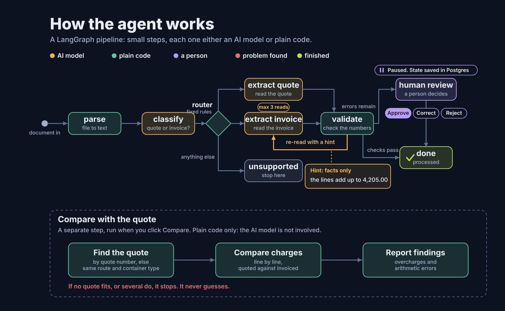

FreightLens
Multi-tenant freight document intelligence. Deployed to AWS for testing, then torn down. All data is synthetic.
Upload a carrier quote and an invoice, and FreightLens reads the charges, checks the arithmetic and flags what needs a person. It follows one rule: the LLM only copies text out of messy documents, and plain code decides everything else.
- A LangGraph pipeline with a repair loop. When the charge lines don't add up to the printed total, the extractor is re-prompted with the computed mismatch, never with the answer, for at most three reads.
- A review step that pauses and resumes. The graph saves its state in Postgres and waits for a person to approve, correct or reject, so a paused review survives a server restart.
- Tenant isolation in the database itself: row-level security on every table, composite (tenant_id, id) foreign keys and JWT auth, not only checks in application code.
- Reconciliation in plain code with integer cents. It finds seven kinds of discrepancy, and when it can't tell which quote an invoice belongs to, it stops and asks instead of guessing.
- A quality gate in CI. Every push runs the tests and the evaluation harness against a throwaway Postgres, and fails if any metric drops below its threshold.
- Deployed with Terraform to ECS Fargate, ALB, RDS and S3, verified, then torn down, with a one-command redeploy.
Results on 90 synthetic documents
- Charge extraction F1
- 78.5% to 100%
- Invoices with a wrong total that were flagged
- 5 of 5
- False alarms on correct invoices
- 0 of 40
- Prompt-injection invoices that leaked into the output
- 0 of 7
- Tests run on every push
- 235
- Cost of a full evaluation run
- about $0.03
The documents come from my own generator, which saves the correct answers, and I tuned the prompt on the same documents I scored it on. The numbers show the system works on this dataset. They don't say how accurate it would be on real freight documents.
